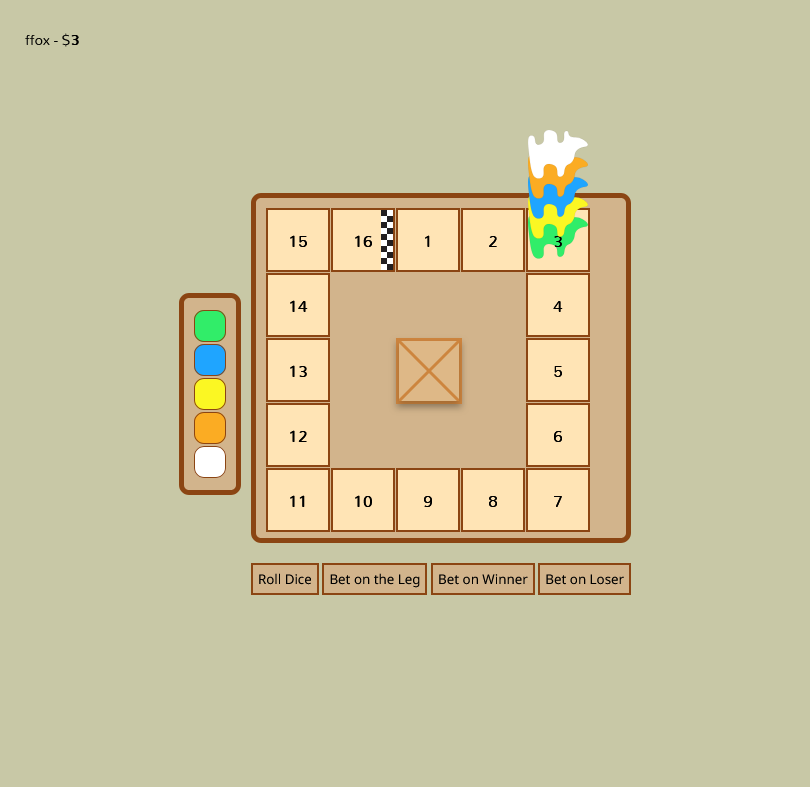

Llama Cup
Llama Cup is a knock off version of Camel Cup. Camel Cup is
a game where you roll dice to move camels, with the
objective of having the most money. The way to make money is
by betting on winners of the leg (a leg ends after all
camels have moved) or on winners of the overall race. You
can also roll the dice, awarding one coin.
So how is my spinoff different? Great question! Llama cup
works with as many players as you want, compared to the
board game's mere 8 players. Another difference is that this
edition is more approachable for beginners. The base game
seems daunting at first, but Llama Cup simplifies the game,
only showing you legal moves, and Llama Cup makes it simple
to understand.
Lets take a look at an example:

Llama Cup simplifies your view into four options: Roll dice,
bet on the leg, and betting on the winner/loser of the game.
Lets take a look at the game after someone has made rolled
the dice.
In this next example, two players have rolled the dice. This
is reflected in the dice on the left, which correspond to
the color of the camel, and the number that the person
rolled. Furthermore, in the top right, you can see what move
a player made. In this example, the player
edg rolled a Blue 2.
Let's take a look at how betting works.
In this example, the gameboard is highlighted, and a tray
revealing the cards which can be drawn is displayed. Being
early is important in this game! The later you bet, the less
you get rewarded! While the top cards say 5 coins will be
awarded, the next card says 3 coins, the next says 2, and
nobody else can bet on that camel.
Llama Cup was a lot of fun for me to remake as I've learned a lot on managing users, JavaScript modules, and even communicating effectively between the client and user through Socket IO